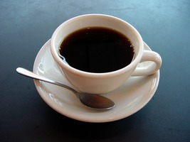

No More Cafe?
 Time to read: 3 min
January 2, 2019
I was in the cafe the other day.
I usually enjoy going to the cafe.
I like COFFEE.
I like COFFEE- a LOT.
Im no stranger to CYBEX- to trolling needlessly, hacking a PS2 in secret(O YES I DID),
gaming on for hours in a booth or in publicly with groups of people.
I enjoy that so much I often return, to my paychecks demise…
ordering take-in and sipping on machine-made coffees all day.
But here in America the experience is dying.
I dont think its just post-New Years jitters.
People need to get to work, to school– and its freaking freezing outside.
NO NO ..people want to come in…
-or do they?
I ordered soup to be nice, I didnt need it.
I felt awkward ordering just ONE cup of coffee- sans laptop..
nope. no internet for me today.
Lonely…coffee sipping me….
Just ME.
Its not what I remember anymore.
Theres no group homework.
No mindless idle chatter.
Winter has set in- but the bum rush to eat, to share pies and cakes, even…
ITS NOT HERE.
The concept of even a cafe is foreign these days.
FUCK THE BREAD!
Its about the SWEETS!
When a cup of coffee- not even flavoured…not-so-special coffee, even…
cant keep my attention for 30 seconds anymore….
(And one viable pot- unless you want decaf)
Mid-day..?? this is nuts….
$3 happy meals and $7 lattes and soups cant save you.
A cafe that cant make it with people ordering just cups of coffee, with shitty (prepaid and canned) service
demanding upfront tips.
YOU EARN TIPS.
You think youre gonna guilt trip me WHEN YOU HAVENT DONE ANYTHING YET…into tipping you at a PREPAID REGISTER?
Clean the table first…maybe….
And this place used to serve FLAVORS of COFFEE, not generic swill that I could make at home…
Losing Panera just hilights the problem.
So I finish my mug and I leave, knowing I AM BETTER THAN THIS shitty ACID I just drunk that wont go down–
and I drive off to my warm apartment- which is now freezing due to the shitty HVAC unit installed.